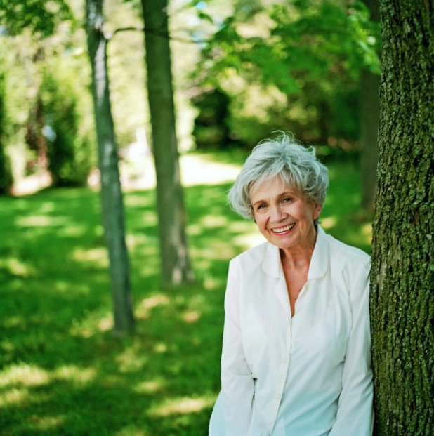

Click on a name to view details and a photo.
| Mary Flannery O'Connor was a storytelling powerhouse who packed two novels and over thirty stories into her career, creating darkly funny, Southern Gothic tales filled with unforgettable characters and a dash of the grotesque. Born on March 25, 1925, she mastered the art of finding the eerie and the extraordinary in everyday life. Dive into her world, and you’re sure to meet some strange, quirky characters you won’t soon forget! |
| Alice Munro, born July 10, 1931, is Canada’s queen of the short story and a Nobel Prize winner in Literature! Known for her stories that glide effortlessly through time, she’s redefined what a short story can be—layered, complex, and full of quiet revelations. Reading Munro is like stepping into a rich, unfolding tapestry of life’s twists and turns! |  |
| Isabel Allende, born August 2, 1942, is a Chilean literary legend who brings the magic in magical realism! With iconic novels like The House of the Spirits and City of the Beasts, she’s captivated readers worldwide and earned the title of 'the world’s most widely read Spanish-language author.' Prepare to be transported to worlds where the extraordinary feels ordinary! |